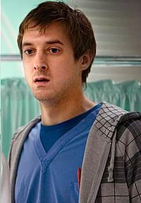

Rory Williams

Rory Williams, Arthur Darvill tarafından canlandırılan Birleşik Krallık yapımı kült bilim kurgu dizisi Doctor Who'da hayali bir karakterdir. 5. sezonda seyirciyle buluşan karakter, yine bu sezonun ortasında On birinci Doktor'a (Matt Smith) yol arkadaşlığı yapmaya başlamıştır.Amy Pond'un nişanlısıyken, Rory ilk başlarda Doktor'a güvenmemektedir; çünkü Amy'nin gizlice onu daha çok sevdiğini düşünür. Fakat daha sonraları kendi çapında bir kahraman olduğunu kanıtlar ve Amy ile evlenir. Amy, TARDIS'te zaman girdabındayken Melody Pond'a hamile kalır fakat bebek doğar doğmaz kaçırılır. 7. sezonun Angels Take Manhattan bölümünde, kendi isminin yazılı olduğu mezara bakarken, zaman girdabından kurtulan bir Ağlayan Melek tarafından New York'taki başka bir zaman dilimine gönderilir.